Scene 1Warm-Up
▶ Start hereHow your Wonder Films lessons work1-minute videoOpen ▾
🎯 TodayI can…
- name different forms of energy such as light, heat, sound, and motion.
- explain how energy causes objects to move or change.
- give examples of energy at work in everyday life.

🔎 Mystery specimenWhat made this strange tube?
What to do: Press Inspect specimen. Move the magnifying lens over the tube, then tap 3 things you notice.
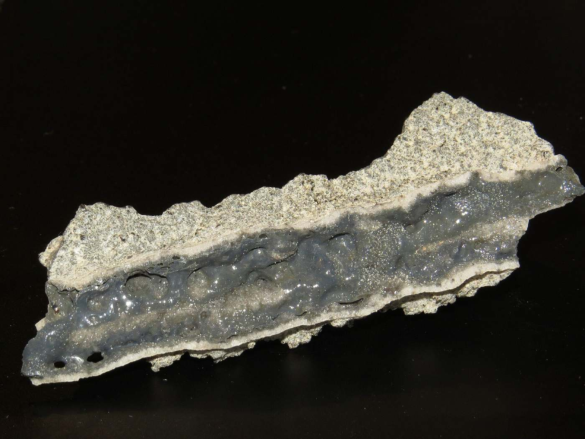
📚 Word WallWords scientists use
What to do: Tap or click each card to flip it and read what the word means.
Scene 2The Lesson
🌱 Part 1What Is Energy?
In science, energy is the ability to cause change. Energy makes things move, light up, warm up, or make sound. You can't always see energy, but you can see what it does.
Watch out: in everyday talk, "energy" can mean feeling peppy. Science words can have their own special meaning.
🎞️ Put the scenes in orderWhat happens in one lightning strike?
What to do: Drag each photo into the film strip, from first to last. You can also tap a photo, then tap a frame. Get the order right and your strip becomes a movie.
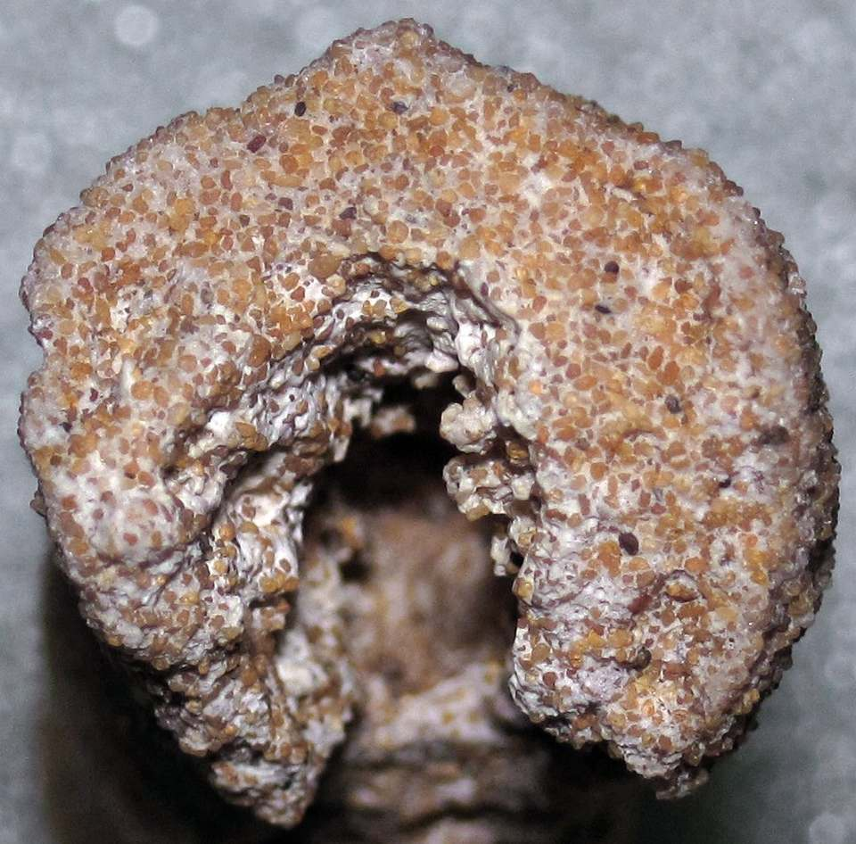
In a storm, you see the flash first and hear the boom a few seconds later. Why?
🌤 Part 2Forms of Energy
Energy comes in many forms. Light energy lets us see. Heat energy makes things warmer. Sound energy is what we hear. Motion energy is the energy of moving things. Electrical energy flows through wires.
Things that give off light often give off heat too, like a light bulb, a candle, or the Sun. When you rub your hands together, motion energy changes into heat energy.
🧪 The Glow TestDoes everything that glows get hot?
What to do: Follow the steps one at a time. You will pick, test, and then explain.
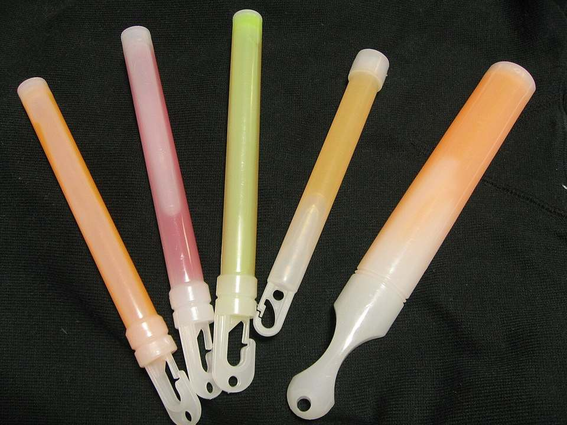
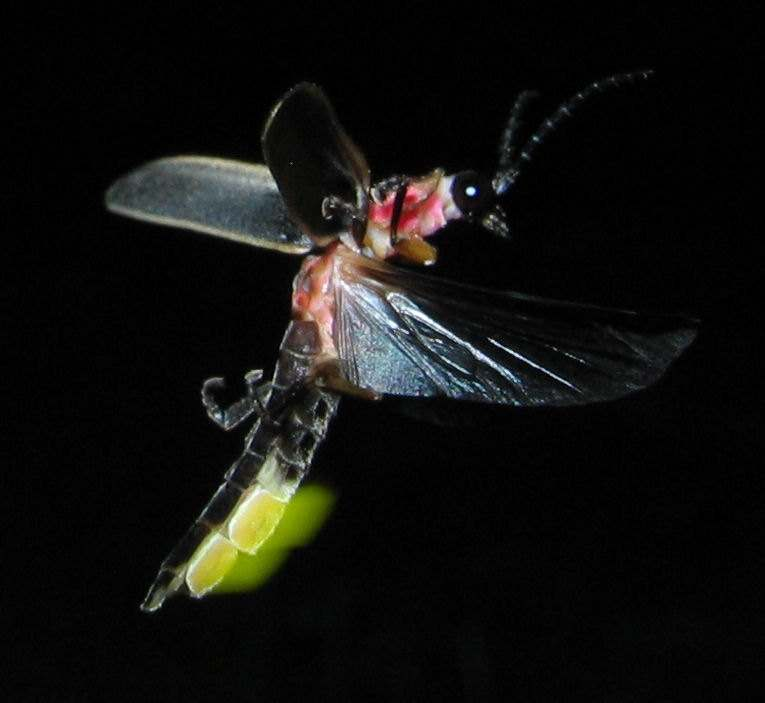
🌍 Part 3Our Sun Is a Star
The Sun is a star: a huge ball of hot, glowing gas that gives off light and heat. Other stars are so far away that they look like tiny points of light. The Sun looks big and bright because it is the closest star to Earth.
Stars are not all the same size, color, or brightness. A telescope shows many more stars than your eyes can see. Never look straight at the Sun.
🔭 The Star ElevatorFrom our closest star out to the far stars
What to do: First, make a prediction. Then brush the glowing step: drag across it (or tap it again and again) until the photo shows.
Is the Sun a star?
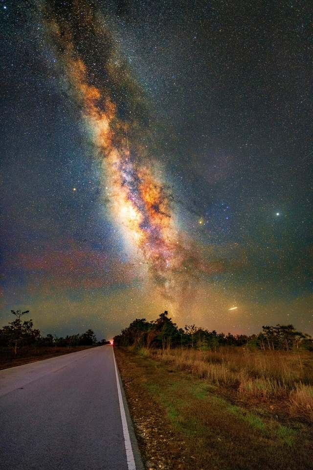
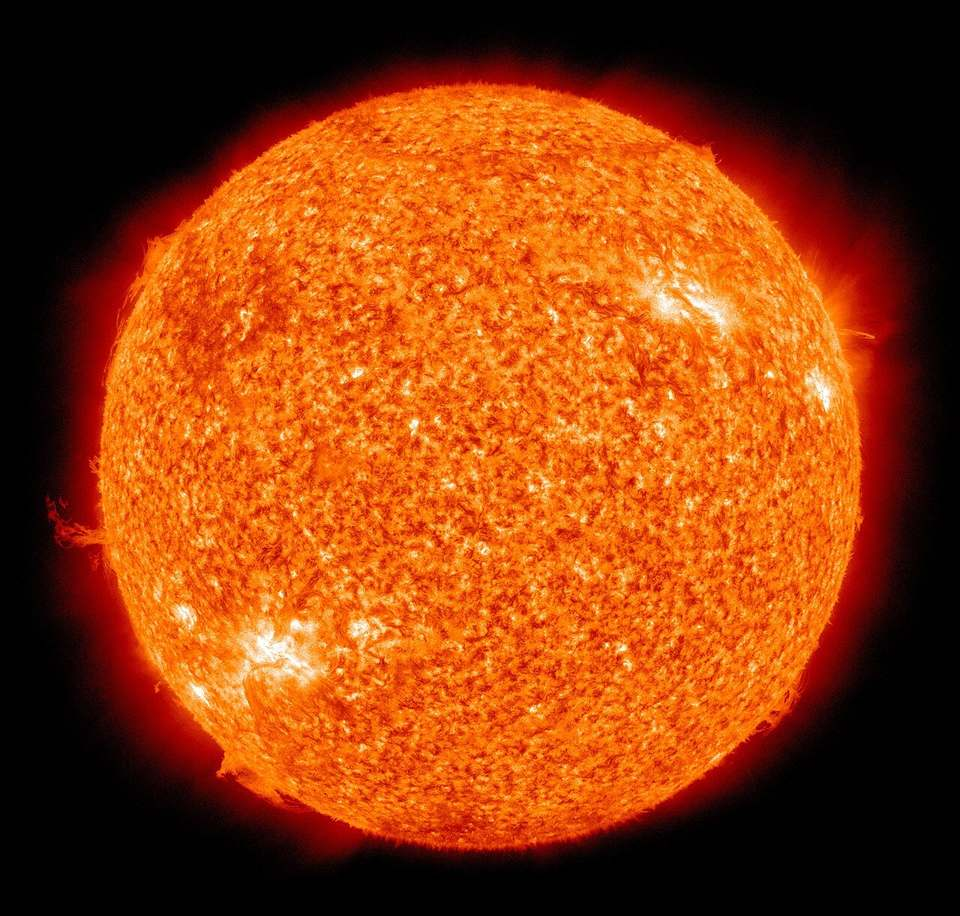
Stop 1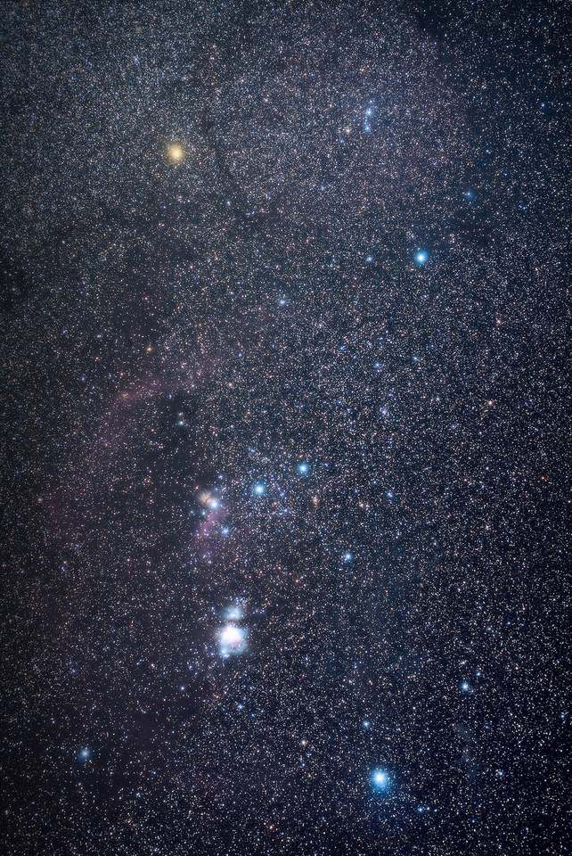
Stop 2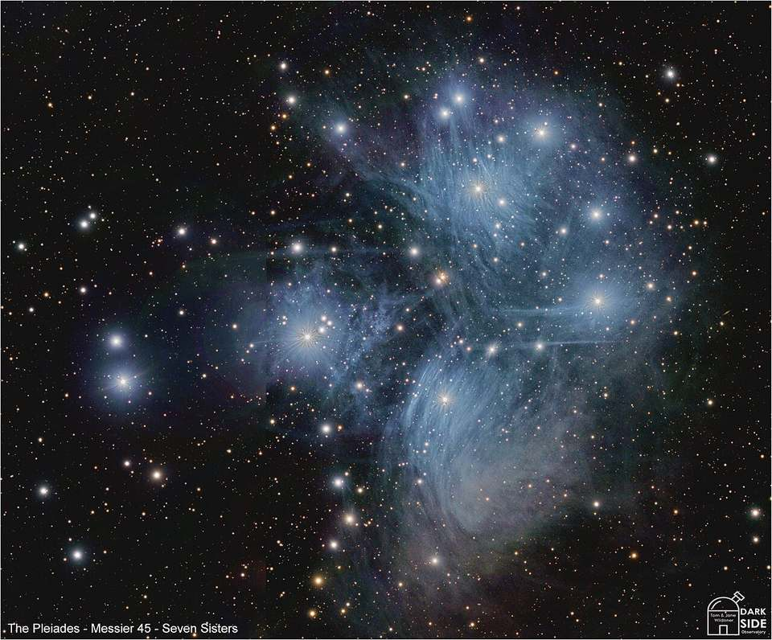
Stop 3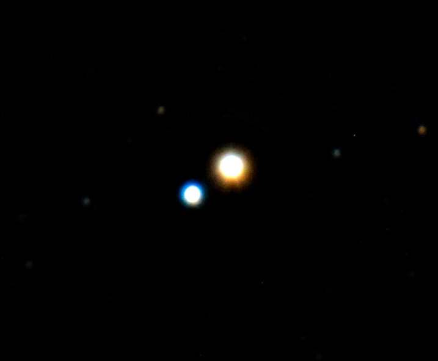
Stop 4The Sun is a star, and the closest one to Earth. Other stars are so far away they look like tiny points of light. Stars come in different sizes, colors, and brightness, and telescopes show many more of them.
Zoe says, "The Sun can't be a star. Stars are tiny dots, and the Sun is huge." Is Zoe right?
Lightning Towers at the Launch Pad
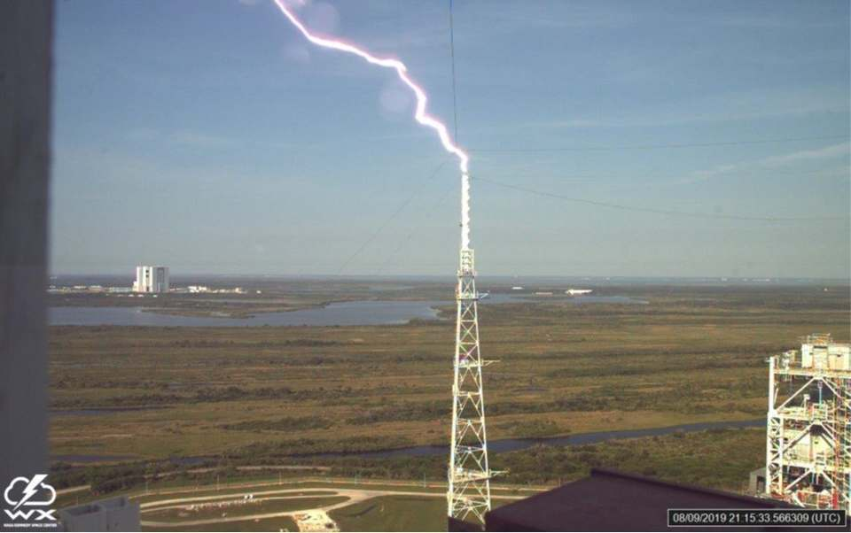
Kennedy Space Center sits in the lightning capital of the United States. So its launch pads have tall lightning towers.
When lightning strikes, a tower catches the bolt and sends its electrical energy safely down into the ground, away from the rocket.
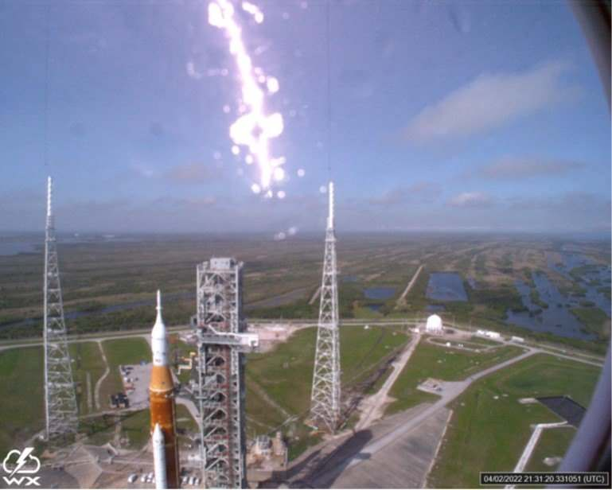
🕵️ Part 4Energy Change Files
What to do: Pick 3 files, one at a time. Tap a clue, then name the energy that comes out. Predict the energy that goes in, and watch the place appear.
| File | My observation | Energy out | Energy in | My evidence |
|---|
🌍 Rebuild the sceneUse your evidence to rebuild the scene OPTIONALOpen ▾
What to do: Pick one you solved. Pick the place it points to, then pick the living things that belong there.
Pick one from your chart and explain it.
Start with: "File __ shows…"
Scene 3Self-Check
Which of these is a form of energy?
What energy change happens when you turn on a flashlight?
A student rubs her hands together quickly and they feel warm. What happened?
Scene 4Assignment
🔍 Part AEnergy forms chart
What to do: Read each one. Pick the best answer, or type your answer.
1. The Sun: which forms of energy does it give off, warming Earth and lighting the day?
2. A guitar: when you strum the strings, which form of energy comes out?
3. A toaster: electrical energy goes in. Which form of energy comes out to toast the bread?
🚀 Part BShort answer
What to do: Answer in complete sentences. Use your science words.
1. Describe one example of energy changing from one form to another.
2. The Sun is the closest star to Earth. Why does that make it look bigger and brighter than the stars you see at night?
✍️ Write and explainHow does energy cause things to change and move? Use examples from your energy files.
What to do: Pick one from your evidence chart. Answer the three questions. Use at least one of the science words under the boxes.
Start with: "I think energy causes change because…"
Start with: "I know this because in my energy files I found…"
Start with: "One example of energy causing change is…"
🎨 Part CDraw and label
What to do: Draw a scene from your home or school that shows at least three forms of energy in action. Label each form of energy and draw arrows showing any energy changes.
🎬 Your question from Scene 1Can you answer it now?
What do you still wonder about? Write your question here. Then answer it.
📋 My answersEverything you wrote, in one place
(Your answers show up here as you write.)
How to turn in: Copy your answers and paste them into the Canvas assignment. Or download the file and upload it. Then press Save my drawing in Part C and upload your drawing too.
✅ Checklist
What to do: Tap each item when it is done. Items you finish on the page check themselves.
- My evidence chart has 3 energy change files and my explanation.
- Part A: my energy forms chart.
- Part B: questions 1 and 2.
- Part C: my drawing and both labels.
- Write and explain, with at least one science word.
🎬 Premiere my energy storyYour exhibit
What to do: Check your exhibit. Pick the one you wrote about, add your first name, then press Premiere film.
I observed…
The energy that came out was…
My evidence…
It tells us…
🎞️ This film's frames
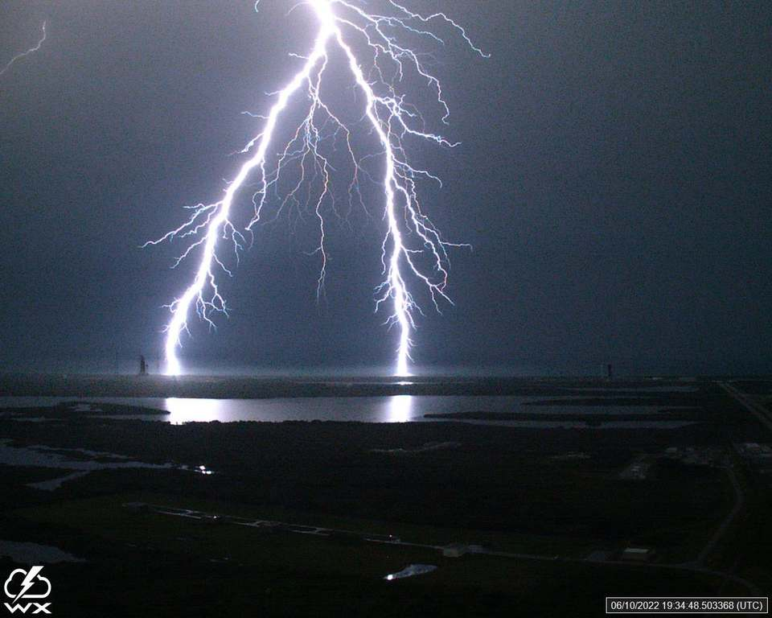
Bolt to Boom
The Glow Test
The Star Elevator
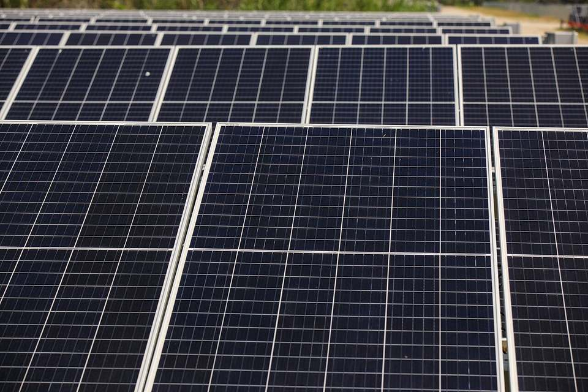
Energy change files
Earn all four frames in the Lesson, then finish the checklist.
🔜 Coming up nextComing up next: 28.02
Investigation: Light, Reflection, Absorption, and Heat. Next time, test how light travels, bounces, and gets soaked up, and how rubbing makes heat.
Photo and music credits
- Photinus pyralis Firefly glowing, art farmer from evansville indiana, usa, CC BY-SA 2.0
- Discovery Solar Energy Center (KSC-20210527-PH-FMX01 0077), NASA Kennedy Space Center / NASA/Frank Michaux, Public domain
- Solar Farm at KSC (KSC-20210405-PH-NAS01 0001), NASA Kennedy Space Center / NASA, Public domain
- STS-125 Atlantis Liftoff 02, Scott Andrews, Canon, Public domain
- STS-125 and STS-400 on Launch Pads, NASA/Jack Pfaller, Public domain
- Carbonfilament, Ulfbastel, CC BY-SA 3.0
- Edison and Ford Winter Estates, Edison's laboratory, Euku, CC BY-SA 3.0
- Steelpan Instruments at Trinidad and Tobago Carnival, Kip1234, CC BY-SA 4.0
- TnT Port of Spain 3, Grueslayer, CC BY-SA 4.0
- GreenMountainWindFarm Fluvanna 2004, Leaflet, CC BY-SA 3.0
- Roscoe Wind Farm in West Texas, Matthew T Rader, CC BY-SA 4.0
- Clearwater Beach, Florida (35188097760), Michel Rathwell from Cornwall, Canada, CC BY 2.0
- Flamingo Amphitheater Milky Way April 2018, Viktorwills, CC BY-SA 4.0
- Custer Astronomical Observatory - Southold New York USA - Dome and Radio Tele…, Astroval1, CC BY-SA 4.0
- View of Hubble after Being Released from the Shuttle Atlantis (28223588012), NASA Hubble Space Telescope, Public domain
- Artemis I Prelaunch (NHQ202208270005), Bill Ingalls, Public domain
- Indian River Lightning (20560530710), Michael Seeley from Melbourne, FL, United States, CC BY 2.0
- Lightning pounds Satellite Beach, Florida (27415069074), Michael Seeley from Melbourne, FL, United States, CC BY 2.0
- Cocoa Beach Florida sunrise, C Watts, CC BY 2.0
- VAB STS-127, Bill Ingalls, Public domain
- Lightning Strike with Artemis I at Pad 39B (KSC-20220402-PH-NAS01 0003), NASA Kennedy Space Center / NASA, Public domain
- The Sun by the Atmospheric Imaging Assembly of NASA's Solar Dynamics Observat…, NASA/SDO (AIA), Public domain
- The Orion Constellation, Igor da Bari, CC BY 4.0
- The Pleiades - Messier 45 - Seven Sisters, Thedarksideobservatory, CC BY-SA 4.0
- Albireo through Celestron C8, Topoignaz, CC BY-SA 4.0
- Thunderhead, NPSPhoto Van Nimwegen, Dec 78 EVER 1235 (9257948414), Everglades NPS from Homestead, Florida, United States, Public domain
- Lightning Strikes at Pad 39B (KSC-20220610-PH-NAS01 0007), NASA Kennedy Space Center / NASA, Public domain
- Lightning 06-21-2013 164 - Flickr - Richard Hurd, Richard Hurd from Green Bay, USA, CC BY 2.0
- Lightning struck live oak tree, Carrollton Riverbend, New Orleans April 2022 …, Infrogmation of Nw Orleans, CC BY-SA 4.0
- Fulgurite (Sahara Dune Field, Morocco) 6, James St. John, CC BY 2.0
- Milky Way from Everglades National Park April, 2018, Viktorwills, CC BY-SA 4.0
- Fulgurit 1, Ringwoodit, CC BY-SA 4.0
- Candle flame closeup, domdomegg, CC BY 4.0
- Chemical-light01, Snow64 (talk), Public domain
- Lightning Strikes at Pad 39B (KSC-20190809-PH-NAS01 0001), NASA, Public domain
- Music: A Night on the Bare Mountain (Modest Mussorgsky), public domain recording (Musopen, via Wikimedia Commons).
- Opti the owl: Optima Academy. Sound effects are made by the page. The lightning movie, the Glow Test, and the Star Elevator are models; every place photo is real.